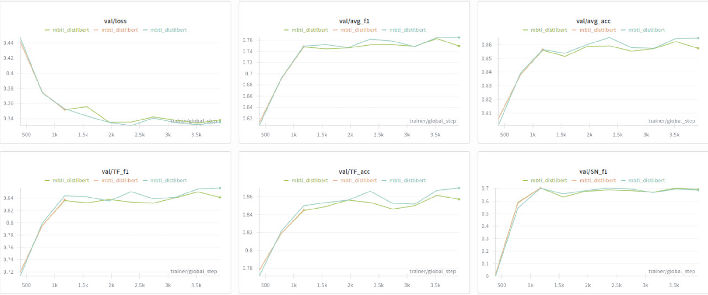
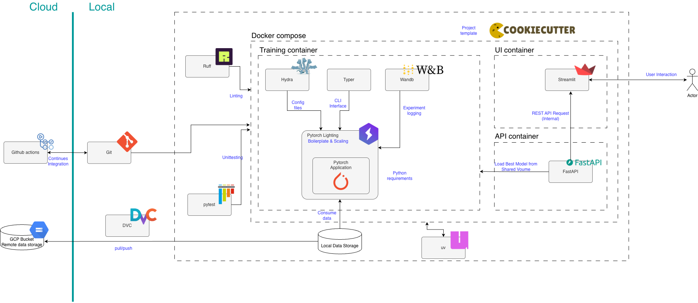

Operations
This is the report template for the exam. Please only remove the text formatted as with three dashes in front and behind like:
--- question 1 fill here ---
Where you instead should add your answers. Any other changes may have unwanted consequences when your report is
auto-generated at the end of the course. For questions where you are asked to include images, start by adding the image
to the figures subfolder (please only use .png, .jpg or .jpeg) and then add the following code in your answer:

In addition to this markdown file, we also provide the report.py script that provides two utility functions:
Running:
bash
python report.py html
Will generate a .html page of your report. After the deadline for answering this template, we will auto-scrape
everything in this reports folder and then use this utility to generate a .html page that will be your serve
as your final hand-in.
Running
bash
python report.py check
Will check your answers in this template against the constraints listed for each question e.g. is your answer too short, too long, or have you included an image when asked. For both functions to work you mustn't rename anything. The script has two dependencies that can be installed with
bash
pip install typer markdown
or
bash
uv add typer markdown
The checklist is exhaustive which means that it includes everything that you could do on the project included in the curriculum in this course. Therefore, we do not expect at all that you have checked all boxes at the end of the project. The parenthesis at the end indicates what module the bullet point is related to. Please be honest in your answers, we will check the repositories and the code to verify your answers.
data.py file such that it downloads whatever data you need and preprocesses it (if necessary) (M6)model.py and a training procedure to train.py and get that running (M6)requirements.txt/requirements_dev.txt files or keeping your
pyproject.toml/uv.lock up-to-date with whatever dependencies that you are using (M2+M6)pep8) while doing the project (M7)Enter the group number you signed up on
Answer:
70
Enter the study number for each member in the group
Example:
sXXXXXX, sXXXXXX, sXXXXXX
Answer:
s250221, s24972, s250272, s242872.
Did you end up using any open-source frameworks/packages not covered in the course during your project? If so which did you use and how did they help you complete the project?
Recommended answer length: 0-200 words.
Example: We used the third-party framework ... in our project. We used functionality ... and functionality ... from the package to do ... and ... in our project.
Answer:
First, we used MLCroissant, a library for machine learning dataset metadata. Instead of manually handling CSV files, we implemented an automated dataloader that retrieves the dataset directly from its source using the Croissant standard. This unified metadata format allows datasets to be loaded automatically and in the correct format without writing custom loading code or manual setup. With this choice, we ensure that the data pipeline is consistent and reproducible.
Second, we integrated the Hugging Face Transformers library, an open-source framework that provided us with accessible state-of-the-art Natural Language Processing (NLP) models. Through this framework, we implemented a pre-trained DistilBERT model—a more compact and faster version of BERT—along with its tokenizer. By including this library, we added advanced NLP capabilities to our MBTI classification task without building complex transformer architectures from scratch. This approach improved model performance despite our limited training data and allowed us to focus on strengthening the deployment pipeline.
In the following section we are interested in learning more about you local development environment. This includes how you managed dependencies, the structure of your code and how you managed code quality.
Explain how you managed dependencies in your project? Explain the process a new team member would have to go through to get an exact copy of your environment.
Recommended answer length: 100-200 words
Example: We used ... for managing our dependencies. The list of dependencies was auto-generated using ... . To get a complete copy of our development environment, one would have to run the following commands
Answer:
We managed our project dependencies using uv (high-performance Python package manager introduced in the course), which we configured via a standard pyproject.toml file. With this approach we dicided to take, we managed to strictly define version constraints for core libraries such as, torch, fastapi and transformers, while isolating development tools like pytest and ruff into dedicated dependency groups. By separating them we ensure that our final app is clean by not installing unnecesary testing tools on the server while providing a full toolkit.
To include a new team member and perform a correct onboarding to replicate the environment exactly, the process summarizes into a single command that handles both, environment creation and dependency resolution at the same time:
The first step would be to clone the ropository following the git clone command. Following this, the new member would have to sync the environment by using the uv sync command.
With this a virtual environment is directly created, resolving the dependencies from pyproject.toml, and installs all the required packages in the correct versions, ensuring identical local setups.
We expect that you initialized your project using the cookiecutter template. Explain the overall structure of your code. What did you fill out? Did you deviate from the template in some way?
Recommended answer length: 100-200 words
Example: From the cookiecutter template we have filled out the ... , ... and ... folder. We have removed the ... folder because we did not use any ... in our project. We have added an ... folder that contains ... for running our experiments.
Answer:
We initialized our project using the course's mlops_template cookiecutter. This standardized foundation allowed us to focus on the src/mbti_classifier directory. Avoiding a deep nested structure, we organized our source code into distinct scripts: data.py and model.py handle core logic, train.py serves as the entry point for training, while api.py and ui.py manage inference and frontend services.
We also developed a robust configuration system in the configs/ directory. Structuring it hierarchically (model, data and trainer) and created specific execution modes (train_cpu.yaml, train_production.yaml, etc.) to switch easily between development and production environments.
In the tests/ folder we expanded the testing structure to include both unit and integration tests.
Regarding the differences to the template structure, we extended it in the following ways:
While the template included basic api and train Dockerfiles, we added a ui.dockerfile to containerize our Streamlit frontend, creating a complete three-service architecture (train, API, UI).
Moreover, we added an AGENTS.md file to provide context and guidance for AI coding assistants such as copilot.
Finally, we integrated Weights and Biases (see the wandb/ directory) for experiment tracking, managing local logs and artifacts to ensure full visibility into our training metrics.
Did you implement any rules for code quality and format? What about typing and documentation? Additionally, explain with your own words why these concepts matters in larger projects.
Recommended answer length: 100-200 words.
Example: We used ... for linting and ... for formatting. We also used ... for typing and ... for documentation. These concepts are important in larger projects because ... . For example, typing ...
Answer:
We enforced high code quality formats using Ruff and Pre-commit.
We selected Ruff as our primary linter (reading the code to find logical errors) and formatter(fixing the style of the code) replacing the need for multiple slower tools. Ensuring the our code follows the PEP 8 standards, optimizes imports, and catches syntax errors instantaneously. Its configuration is centralized in our pyproject.toml file to ensure consistency across the team.
To automate this, we implemented Pre-commit. A framework that manages Git hooks that trigger our quality checks automatically before every commit. If a file fails linting or formatting, the commit is strictly blocked until the issue is resolved. With this, we prevent dirty code from entering the version control history.
All of this can be setup and runned with the following commands: uv run pre-commit install, one time setup. uv run pre-commit run --all-files, to manually run checks on all the files.
In the following section we are interested in how version control was used in your project during development to corporate and increase the quality of your code.
How many tests did you implement and what are they testing in your code?
Recommended answer length: 50-100 words.
Example: In total we have implemented X tests. Primarily we are testing ... and ... as these the most critical parts of our application but also ... .
Answer:
We implemented 27 tests using pytest, covering unit and integration levels to ensure reliability. Our unit suite (23 tests) focuses on component isolation: test_model.py validates the DistilBERT wrapper and optimizer ensuring correct tensor shapes; test_data_module.py verifies the data pipeline and DataLoader construction; and test_api.py mocks model behavior to test FastAPI logic without loading the heavy model. Complementing this, our integration suite (4 tests) in test_pipeline.py validates end-to-end workflows, specifically confirming that raw data is correctly processed and saved model artifacts (best.ckpt) can be reloaded for inference.
What is the total code coverage (in percentage) of your code? If your code had a code coverage of 100% (or close to), would you still trust it to be error free? Explain you reasoning.
Recommended answer length: 100-200 words.
Example: The total code coverage of code is X%, which includes all our source code. We are far from 100% coverage of our ** code and even if we were then...*
Answer:
The total code coverage is 77%, encompassing the core logic of our API and model modules. We achieved this using pytest and pytest-cov, targeting the mbti_classifier source code while omitting peripheral files like the UI and training scripts to reflect critical inference components. We also perform integration tests to complement unit tests, ensuring robustness across different system interactions.
Even if we reached 100% coverage, we would not trust the code to be entirely error-free. Coverage measures executed lines, not logical correctness or handling of all edge cases. For example, handling unexpected null values in a rare API endpoint might be missed. Similarly, integration issues like mismatched data formats between microservices could go unnoticed. High coverage ensures paths are tested but does not account for integration issues or hardware-specific bugs. Thus, while 77% is a strong safety net, it remains just one part of our quality assurance strategy.
Did you workflow include using branches and pull requests? If yes, explain how. If not, explain how branches and pull request can help improve version control.
Recommended answer length: 100-200 words.
Example: We made use of both branches and PRs in our project. In our group, each member had an branch that they worked on in addition to the main branch. To merge code we ...
Answer:
We fully integrated branches and Pull Requests (PRs) into our workflow to manage concurrent development. Each team member maintained their own dedicated branch, which allowed us to work on features independently without interfering with each other's code. During merges, we resolved conflicts by reviewing the changes together as a team, ensuring that the final code reflected the best solution and maintained consistency across the project.
We used the main branch exclusively as our stable, clean version. To merge our changes, we opened Pull Requests, which served as an important quality control gate. We configured GitHub Actions to automatically trigger our Continuous Integration (CI) pipeline on these PRs, which included unit tests to verify functionality, linting to ensure code style consistency, and security checks to identify vulnerabilities. This setup guaranteed that all code met our quality standards before any merge could occur. This workflow not only prevented broken code from reaching the main branch but also facilitated code reviews, allowing us to discuss implementation details before finalizing changes.
Did you use DVC for managing data in your project? If yes, then how did it improve your project to have version control of your data. If no, explain a case where it would be beneficial to have version control of your data.
Recommended answer length: 100-200 words.
Example: We did make use of DVC in the following way: ... . In the end it helped us in ... for controlling ... part of our pipeline
Answer:
We did make use of DVC in order to manage our data assets by configuring a Google Cloud Storage (GCS) bucket as our remote backend (gs://mlops70_bucket/dvcstore).
We found that by integrating DVC into our project we were able to decouple our heavy data files from our repository. Instead of pushing our large dataset to github, which we found that was really inneficient, we decided to separate our data from the code, the large files reside in GCS while our git repository is in charge of tracking only the tiny configuration files needed to retrieve this data.
With this practice, we greatly improved our project by ensuring both, reproducibility and collaboration. Any member of our team could clone the repo and run dvc pull to retrieve the exact version of the data used for a particular experiment, ensuring that we all had consistent training environments maintaining the git repo clean and efficient.
Discuss you continuous integration setup. What kind of continuous integration are you running (unittesting, linting, etc.)? Do you test multiple operating systems, Python version etc. Do you make use of caching? Feel free to insert a link to one of your GitHub actions workflow.
Recommended answer length: 200-300 words.
Example: We have organized our continuous integration into 3 separate files: one for doing ..., one for running ... testing and one for running ... . In particular for our ..., we used ... .An example of a triggered workflow can be seen here:
Answer:
Our Continuous Integration (CI) architecture is built on GitHub Actions and is organized into three distinct workflows to balance code quality, platform reliability, and resource efficiency. We chose GitHub Actions for its seamless integration with our repository, graet community support, and ability to configure workflows with a build matrix and caching, which optimizes resource usage and ensures compatibility across multiple environments.
First, our main testing pipeline, tests.yml, is designed to ensure robustness across all development environments. We use a build matrix approach that automatically runs our full test on Ubuntu-latest, macOS-latest, and Windows-latest, while simultaneously checking compatibility against both Python 3.11 and 3.12. This makes sure that our package works correctly no matter of the local operating system. To optimize this process, we integrated the astral-sh/setup-uv action with dependency caching enabled. This setup reduces build times by caching the virtual environment and packages between runs, ensuring rapid feedback loops without having to wait for repeated downloads.
Second, we enforce strict code quality standards through pre-commit hooks. Rather than relying only on server-side checks that might fail 10 minutes after a push, we integrated hooks like trailing-whitespace and end-of-file-fixer. These run locally before every commit, automatically correcting formatting errors and preventing syntax errors from cluttering our project history or code reviews.
Finally, we implemented strategic event triggers to optimize computational resources. Training models and running full evaluations can be expensive. Therefore, we separated these tasks from our main CI loop. We created dedicated workflows, on_data_change.yml and on_model_change.yml, which use path filters to only trigger when changes are detected in the data/ or models/ directories respectively. This prevents redundant retraining or code fixes, saving both time and GitHub Actions compute minutes.
https://mlopsgroup70.github.io/mlops_group70/
In the following section we are interested in learning more about the experimental setup for running your code and especially the reproducibility of your experiments.
How did you configure experiments? Did you make use of config files? Explain with coding examples of how you would run a experiment.
Recommended answer length: 50-100 words.
Example: We used a simple argparser, that worked in the following way: Python my_script.py --lr 1e-3 --batch_size 25
Answer:
To manage and configure experiments we used Hydra instead of an argparser, allowing us to manage configurations hierarchically. Our main file, configs/train.yaml, composes the experiment configuration by importing default settings from sub directories that we've defined as model/, data/, and trainer/.
To execute experiments, we use Hydra's command-line override syntax. Launching experiments with modified hyperparameters without altering the source code. For example:
uv run train model.learning_rate=0.0001 trainer.max_epochs=20
With this we ensure correct reproducibility by keeping all the default configurations controlled and at the same time allowing us to easily run different experiments and test different parameter combinations.
Reproducibility of experiments are important. Related to the last question, how did you secure that no information is lost when running experiments and that your experiments are reproducible?
Recommended answer length: 100-200 words.
Example: We made use of config files. Whenever an experiment is run the following happens: ... . To reproduce an experiment one would have to do ...
Answer:
We secured reproducibility through a layered approach combining configuration management, data versioning, and rigorous experiment tracking.
First, we utilize Hydra to manage all experiment configurations. Instead of hardcoding parameters or relying on fragile command-line arguments, we define them in hierarchical version-controlled .yaml files (for example configs/train.yaml). When an experiment runs, Hydra composes these configs and our training script logs the full parameter set, ensuring we know exactly what settings were used.
Second, to ensure deterministic behavior, we explicitly set a global random seed via pl.seed_everything(cfg.seed) before initializing any models or data loaders.
Third, we integrated Weights & Biases to automatically log training metrics, artifacts, and crucially the Git commit hash associated with each run.
Finally, we track our dataset using DVC. This allows us to link specific data versions to our code. To reproduce an older experiment, one simply checks out the specific Git commit (restoring the code and config), pulls the corresponding data via dvc pull, and executes the training script.
Upload 1 to 3 screenshots that show the experiments that you have done in W&B (or another experiment tracking service of your choice). This may include loss graphs, logged images, hyperparameter sweeps etc. You can take inspiration from this figure. Explain what metrics you are tracking and why they are important.
Recommended answer length: 200-300 words + 1 to 3 screenshots.
Example: As seen in the first image when have tracked ... and ... which both inform us about ... in our experiments. As seen in the second image we are also tracking ... and ...
Answer:
As mentioned above, to ensure rigorous experiment tracking and reproducibility, we integrated Weights & Biases (W&B) into our training pipeline. This allowed us to monitor real-time training dynamics and assess model convergence without relying on ephemeral container logs.
As delineated in Figure 1, we primarily track Validation Loss (val/loss), which serves as our objective function for optimization. The downward trend of the loss curve demonstrates that the DistilBERT model is effectively minimizing the error between predicted and actual MBTI types. The curve’s stabilization around global step 3,500 indicates that the model has reached a point of convergence, suggesting that further training would likely yield diminishing returns or lead to overfitting.
Simultaneously, we monitor Average F1 Score (val/avg_f1) and Average Accuracy (val/avg_acc). While accuracy provides an intuitive measure of overall correctness, tracking the F1 score is crucial for this classification task; it accounts for potential class imbalances within the personality dataset by providing the mean of precision and recall.
Crucially, our dashboard further granularizes performance by specific MBTI axes, such as Thinking-Feeling (val/TF_f1) and Sensing-Intuition (val/SN_f1). This specific tracking is key because personality classification is a multi-dimensional problem. By isolating these metrics, we can diagnose if the model struggles with specific traits (for example, distinguishing 'Sensing' from 'Intuition') even if global accuracy appears high. This monitoring strategy ensures that the minimization of the loss function translates directly into reliable, generalized predictive performance across all personality dimensions.

Docker is an important tool for creating containerized applications. Explain how you used docker in your experiments/project? Include how you would run your docker images and include a link to one of your docker files.
Recommended answer length: 100-200 words.
Example: For our project we developed several images: one for training, inference and deployment. For example to run the training docker image:
docker run trainer:latest lr=1e-3 batch_size=64. Link to docker file:Answer:
For our project, we developed three Docker images managed with Docker Compose: one for training, one for the FastAPI inference server, and one for the Streamlit UI. This architecture effectively separates the training container, which functions as a one-time job that processes data and saves models, from the API and UI, which run as persistent services.
A key architectural decision was to use shared volumes for the models/ directory. This strategy ensures that trained checkpoints persist across container lifecycles and facilitates immediate model loading by the API, thereby eliminating the need for redundant file replication. The containers communicate through Docker's internal networking, where the UI references the API service by name (http://api:8000) rather than localhost, enabling seamless inter-container communication.
Moreover, we implemented health checks to ensure the API is fully operational before the UI starts, preventing connection errors during startup. Each image is optimized with only necessary dependencies—for instance, the API includes build tools for PyTorch compilation optimizations, while the UI container remains lightweight with just Streamlit and visualization libraries. This multi-container approach mirrors production microservices architecture and enables independent scaling of training, inference, and presentation layers.
When running into bugs while trying to run your experiments, how did you perform debugging? Additionally, did you try to profile your code or do you think it is already perfect?
Recommended answer length: 100-200 words.
Example: Debugging method was dependent on group member. Some just used ... and others used ... . We did a single profiling run of our main code at some point that showed ...
Answer:
Our debugging strategy relied heavily on a combination of visual monitoring, local testing, and unit tests. We integrated Weights & Biases (WandB) to track training dynamics in real-time. By monitoring loss curves and system metrics, we could quickly identify issues like exploding gradients or non-converging models without waiting for full training runs to complete. For code-level logic, we utilized our tests/ suite with pytest to isolate faulty components. Additionally, we maintained quick and cpu training configurations (e.g., configs/trainer/quick.yaml) which allowed us to step through the training loop locally using IDE debuggers or print statements, avoiding the overhead of cloud-based debugging.
Regarding profiling, we did not perform extensive function-level profiling (e.g., using cProfile or PyTorch Profiler) as our training throughput was sufficient for our deadlines. However, we did implement performance optimizations such as torch.compile in our model definition to speed up the forward pass. Instead of deep code profiling, we relied on WandB's system metrics to ensure our GPU utilization was healthy and that we weren't bottlenecked by data loading.
In the following section we would like to know more about your experience when developing in the cloud.
List all the GCP services that you made use of in your project and shortly explain what each service does?
Recommended answer length: 50-200 words.
Example: We used the following two services: Engine and Bucket. Engine is used for... and Bucket is used for...
Answer:
We used Google Cloud Storage (Bucket) as our only GCP service in this project.
Google Cloud Storage is a scalable object storage service that provides reliable and cost-effective storage for unstructured data. In our project, we use a bucket named mlops70_bucket as the remote storage backend for DVC (Data Version Control).
Specifically, the bucket stores:
- Raw datasets (~8,600 MBTI personality samples from Kaggle) - Processed data (~430,000 preprocessed posts with binary labels) - Model checkpoints (our trained DistilBERT model, ~800MB)
This allows us to version control large files without storing them directly in Git, enabling reproducible experiments across different environments. Team members can pull the exact versions of data and models used in any experiment by running dvc pull, which fetches the files from the GCS bucket using content-addressable storage (MD5 hashes).
The backbone of GCP is the Compute engine. Explained how you made use of this service and what type of VMs you used?
Recommended answer length: 100-200 words.
Example: We used the compute engine to run our ... . We used instances with the following hardware: ... and we started the using a custom container: ...
Answer:
Insert 1-2 images of your GCP bucket, such that we can see what data you have stored in it. You can take inspiration from this figure.
Answer:
Upload 1-2 images of your GCP artifact registry, such that we can see the different docker images that you have stored. You can take inspiration from this figure.
Answer:
Upload 1-2 images of your GCP cloud build history, so we can see the history of the images that have been build in your project. You can take inspiration from this figure.
Answer:
Did you manage to train your model in the cloud using either the Engine or Vertex AI? If yes, explain how you did it. If not, describe why.
Recommended answer length: 100-200 words.
Example: We managed to train our model in the cloud using the Engine. We did this by ... . The reason we choose the Engine was because ...
Answer:
We did not use Vertex AI or Google Cloud Engine for model training, primarily due to a strategic prioritization of resource efficiency and reproducibility over raw compute power.
Our DistilBERT model and dataset were sufficiently sized to be trained on local hardware and standard CI/CD runners, making the complexity and cost overhead of provisioning managed cloud GPU instances unnecessary for our immediate scope. Instead, we focused our efforts on creating a "cloud-ready" architecture using Docker Compose and DVC. By strictly containerizing our training environment and decoupling data via GCS, we achieved the core MLOps goal of portability.
While we didn't execute the final training job on Vertex AI, our architecture is designed such that migrating to the cloud would be seamless: it would simply require pushing our existing train.dockerfile image to the Artifact Registry and submitting a job, rather than refactoring the codebase. We prioritized rigorous testing, robust CI/CD pipelines, and data versioning foundations which we believe add more value to the project's lifecycle than the compute location itself.
Did you manage to write an API for your model? If yes, explain how you did it and if you did anything special. If not, explain how you would do it.
Recommended answer length: 100-200 words.
Example: We did manage to write an API for our model. We used FastAPI to do this. We did this by ... . We also added ... to the API to make it more ...
Answer:
We did manage to succesfully implement an API using FastAPI to deploy our MBTI classifier. The core of it is src/mbti_classifier/api.py, here we define a predict/ endpoint that accepts raw text and returns the predicted personality type alongside probability scores for each type. We used Pydantic models to ensure a strict input validation, for example that the inserted text has a minimum input, with this we also guarantee a structured response.
A key optimization strategy that we implemented was separating the inference environment from training. We created an api.dockerfile that builds a lightweight image using python:3.12-slim and uv, installing only the runtime dependencies necessary for inference. This significantly reduces the container size compared to the training environment.
Furthermore, we ensured reliability by implementing a robust testing strategy in tests/unit/test_api.py. We used unittest.mock to patch the heavy DistilBERT model and tokenizer during testing. Specifically, we mocked the model's forward pass to return predefined logits and the tokenizer's output to return simulated input tensors. This allowed us to verify the API's logic, error handling, and data validation instantaneously without the necessity of loading the full model.
Did you manage to deploy your API, either in locally or cloud? If not, describe why. If yes, describe how and preferably how you invoke your deployed service?
Recommended answer length: 100-200 words.
Example: For deployment we wrapped our model into application using ... . We first tried locally serving the model, which worked. Afterwards we deployed it in the cloud, using ... . To invoke the service an user would call
curl -X POST -F "file=@file.json"<weburl>Answer:
We successfully deployed our model locally using a containerized microservices architecture managed by Docker Compose. We wrapped our DistilBERT model in a FastAPI application and built a dedicated image using our dockerfiles/api.dockerfile. This deployment serves the application on http://localhost:8000, ensuring the inference environment is clean and completely isolated from training dependencies.
To invoke the inference service, any client can send a standardized HTTP POST request to the /predict endpoint with a JSON payload. For example, using curl in the terminal:
curl -X POST "http://localhost:8000/predict" \ -H "Content-Type: application/json" \ -d '{"text": "I enjoy solving complex problems alone and reading books."}'
Did you perform any unit testing and load testing of your API? If yes, explain how you did it and what results for the load testing did you get. If not, explain how you would do it.
Recommended answer length: 100-200 words.
Example: For unit testing we used ... and for load testing we used ... . The results of the load testing showed that ... before the service crashed.
Answer:
We performed extensive unit testing on our API using pytest and FastAPI's TestClient. We can find this in tests/unit/test_api.py, we isolated the API logic by mocking the heavy machine learning components (the DistilBERT model and tokenizer) using unittest.mock. This allowed us to verify critical functionality without memory overhead, including: Endpoint Stability to ensuring valid requests return status 200 and the correct JSON structure, Input Validation to verify that our Pydantic models correctly reject invalid inputs (for example, text under 10 characters) with 400 errors and Error Handling, confirming the system fails gracefully if the model is not loaded.
Moreover, regarding Load Testing, we did not perform formal load testing in this iteration. However, to do so, we would use Locust. We would implement a locustfile.py defining a HttpUser class that sends POST requests to the /predict endpoint with randomized text payloads. We would start with a small number of simulated users and gradually increase the traffic. We would determine the system's limit by observing when the API starts getting too slow (taking longer than 500ms to respond) or begins crashing. This would give us the maximum Requests Per Second (RPS) our service can handle before saturation.
Did you manage to implement monitoring of your deployed model? If yes, explain how it works. If not, explain how monitoring would help the longevity of your application.
Recommended answer length: 100-200 words.
Example: We did not manage to implement monitoring. We would like to have monitoring implemented such that over time we could measure ... and ... that would inform us about this ... behaviour of our application.
Answer:
We did not implement a dedicated monitoring service for our deployed model, as our current architecture is focused on development and local deployment. However, we recognize that implementing monitoring would be essential for the longevity and reliability of a production application.
In a production setting, we would prioritize monitoring data drift and prediction drift. Since personality language patterns change over time (such as new slang or topics on social media), the input distribution could diverge from our training data (PersonalityCafe posts), leading to performance degradation. Monitoring tools like Evidently AI or Prometheus could track these statistical properties.
Additionally, we would benefit from tracking system metrics (latency, throughput, memory usage) to ensure the API remains responsive under load. If we detected that average inference time increased significantly or that the distribution of predicted classes skewed heavily (such as suddenly predicting 100% "Introvert"), an automated alert system could notify us to retrain the model or investigate the data pipeline, ensuring the application remains robust and accurate over years of operation.
In the following section we would like you to think about the general structure of your project.
How many credits did you end up using during the project and what service was most expensive? In general what do you think about working in the cloud?
Recommended answer length: 100-200 words.
Example: Group member 1 used ..., Group member 2 used ..., in total ... credits was spend during development. The service costing the most was ... due to ... . Working in the cloud was ...
Answer:
We utilized approximately $5 USD in Google Cloud credits throughout the project's development lifecycle. While we maintained a consistent, low-cost footprint with GCS for our DVC remote backend, the primary cost driver was the Compute Engine. These costs were accrued during initial testing phases where we experimented with model training and container deployment on remote virtual machines, although we ultimately did not fully automate the cloud training pipeline in the final iteration.
Reflecting on the experience, cloud development offered significant advantages in terms of decoupling performance from local hardware constraints and facilitating centralized collaboration. It provided a unified environment where all team members could access shared artifacts and resources. However, the transition from local to cloud infrastructure presented a steep learning curve. The complexity involved in configuring IAM permissions, managing service account keys, and establishing secure networking for our containers highlighted that while the cloud offers scalability, it demands a substantial upfront investment in configuration and infrastructure management compared to local development.
Did you implement anything extra in your project that is not covered by other questions? Maybe you implemented a frontend for your API, use extra version control features, a drift detection service, a kubernetes cluster etc. If yes, explain what you did and why.
Recommended answer length: 0-200 words.
Example: We implemented a frontend for our API. We did this because we wanted to show the user ... . The frontend was implemented using ...
Answer:
We implemented a Streamlit frontend to make our model accessible to non-technical users. Our ui.py application provides a clean, interactive interface where users can input text and instantly visualize their personality prediction. We chose Streamlit for its ability to rapidly prototype data apps in pure Python. A standout feature is the interactive radar chart (built with Plotly), which visualizes the probability distribution across the four MBTI dimensions (E/I, S/N, T/F, J/P), offering deeper insights than a simple classification label. The UI is containerized (dockerfiles/ui.dockerfile) and communicates seamlessly with our API container.
Additionally, we automated our project documentation using MkDocs and GitHub Pages. We created a comprehensive documentation site that includes architecture diagrams, API references, and user guides. By configuring a CI/CD workflow (deploy_docs.yaml), any update to the documentation in the main branch automatically builds and deploys the static site to GitHub Pages, ensuring our documentation is always synchronized with the codebase.
Include a figure that describes the overall architecture of your system and what services that you make use of. You can take inspiration from this figure. Additionally, in your own words, explain the overall steps in figure.
Recommended answer length: 200-400 words
Example:
The starting point of the diagram is our local setup, where we integrated ... and ... and ... into our code. Whenever we commit code and push to GitHub, it auto triggers ... and ... . From there the diagram shows ...
Answer:

The diagram illustrates the complete MLOps lifecycle of our MBTI classification project, separated into key operational domains:
Local Development & Experimentation: The process begins in our local environment. We used Cookiecutter to scaffold the initial project structure, ensuring standardized formatting. Code quality is strictly enforced during development using Ruff for linting and formatting, alongside Pytest for unit testing, all orchestrated via Git hooks. For experiment tracking, we integrated W&B directly into our Hydra-configured training scripts. This allows us to log metrics (loss, accuracy) and artifacts automatically whenever a training job is executed. Crucially, our data management relies on DVC, which pushes and pulls large datasets to/from our GCS Bucket, decoupling heavy data from our lightweight Git repository.
Continuous Integration (CI):
Upon pushing code to GitHub, our GitHub Actions pipeline is triggered. This automated workflow runs our test suite (pytest) and linting checks (ruff) on a matrix of operating systems to ensure cross-platform compatibility and code integrity before any merge.
Containerized Deployment: The core of our deployment strategy is Docker Compose, which orchestrates three distinct services:
This architecture ensures a seamless flow from local code changes to specific, reproducible containerized deployments, underpinned by cloud storage for data persistence.
Discuss the overall struggles of the project. Where did you spend most time and what did you do to overcome these challenges?
Recommended answer length: 200-400 words.
Example: The biggest challenges in the project was using ... tool to do ... . The reason for this was ...
Answer:
The most significant challenges we encountered during this project come from collaborative software engineering, the intricacies of optimizing transformer-based architectures, and the complex integration of diverse technologies.
First, coordinating parallel development on a unified shared codebase was challenging. Orchestrating simultaneous feature integration across different local environments required rigorous version control discipline. We overcame this by enforcing a strict Pull Request workflow and a comprehensive Continuous Integration pipeline, which minimized integration conflicts and ensured strict code stability.
Second, a substantial portion of our resources was dedicated to the optimal configuration and training of the model. Improving the efficiency of our multi-task classifier required a deep, low-level understanding of the underlying BERT architecture. A specific hustle was handling the model's token limit without inducing overfitting or losing critical context. To address this, we engineered a specific data preprocessing pipeline that utilized random information windows rather than simple truncation. This technique allowed the model to process long sequences efficiently by sampling different sections of text during training, ultimately balancing computational performance with robust generalization.
Finally, connecting all the different technologies was a major challenge. Orchestrating the interoperability between Hydra, DVC, Weights & Biases, and Docker required meticulous configuration to ensure that local development environments, CI pipelines, and containerized deployments functioned as a seamless and unified system.
State the individual contributions of each team member. This is required information from DTU, because we need to make sure all members contributed actively to the project. Additionally, state if/how you have used generative AI tools in your project.
Recommended answer length: 50-300 words.
Example: Student sXXXXXX was in charge of developing of setting up the initial cookie cutter project and developing of the docker containers for training our applications. Student sXXXXXX was in charge of training our models in the cloud and deploying them afterwards. All members contributed to code by... We have used ChatGPT to help debug our code. Additionally, we used GitHub Copilot to help write some of our code. Answer:
Student s250272 was responsible for the core MLOps engineering and application development. This involved setting up the initial repository with Cookiecutter, configuring GitHub Actions for cross-platform Continuous Integration, and implementing code quality pipelines using Ruff. They developed the modular training system using Torch Lightning and Hydra for hyperparameter management, integrated Weights & Biases for experiment tracking, and engineered the full inference stack (FastAPI and Streamlit) orchestrating it via Docker Compose.
Student s243972 managed the project lifecycle and cloud infrastructure. They defined the project scope and model selection strategy, set up the Google Cloud Platform environment, and linked Google Buckets with DVC for data and model versioning. Additionally, they handled the creation of base Docker images/Dockerfiles, deployed the documentation using MkDocs and GitHub Pages, and designed the MLOps architecture diagrams.
Student s250221 focused on the modeling and testing strategy, creating the baseline model to establish performance benchmarks. They collaborated closely with the team on implementing Continuous Integration workflows and ensuring robust data coverage and testing standards.
Student s242872 was in charge of the initial data phase, performing the necessary preprocessing and cleaning to prepare the dataset for the pipeline.
All members contributed to the code quality and the writing of the final report. We have used ChatGPT to help debug our code. Additionally, we used GitHub Copilot to help write some of our code.
{kind=link}
{kind=link}
{kind=link}
{kind=link}
{kind=link}